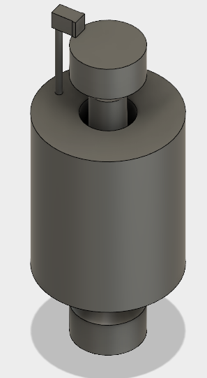

Greetings fellow creatures of this three-dimensional plane, This is what I created my fift week of Digital Engineering This is is a statue of my head that I created by using a 3D scanner to acquire the three dimensional model of my head. Then I created the winding pedastal using Fusion 360, and combined them in Meshmixer. Afterwards, I combined the two solids and exported Makerbot Print and 3D printed them. When working with the MakerBot Replicator 5th Gen printers, it is important to remember to not destroy the mesh for there are only certain paths that the printer can follow. I also created a 3D printed object that is a cylinder with a spool in the midddle.  Lastly, I designed a 3D printed screwdriver using Fusion 360